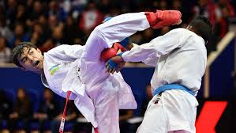
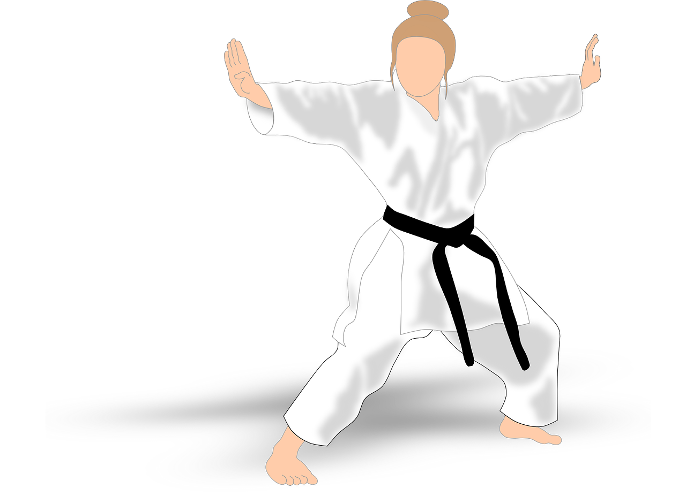
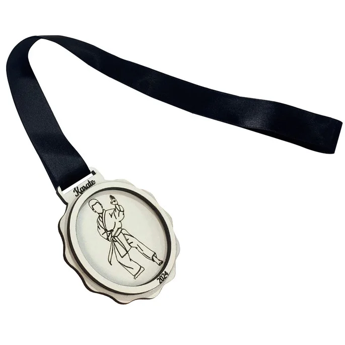
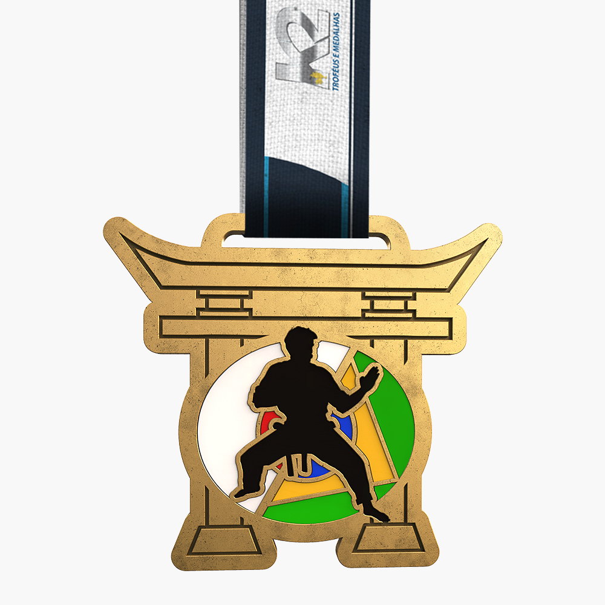

No dia 10 de agosto, fui a um campeonato e prcisa escolher entre kumite e kata.

Eu tinha apenas 1 adversário e disputando contra ele tive a oportuniddade de escolher entre dois golpes, faltava apenas 3 pontos para vencer e eu estava empatado com o outro atleta.

Você fica em dúvida de qual kata fazer

O golpe era muito arriscado, então você leva prata para casa.

Você conseguiu dar um ura mawashi e um may geri, vencendo a luta em primeiro lugar.
Seu kata não teve kime suficiente e ficou em terceiro lugar.
Você fez o kata com maestria, competiu o 1° lugar e levou ouro para casa